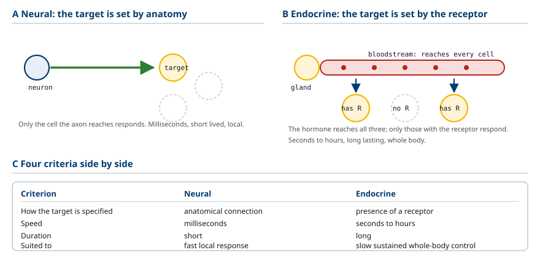
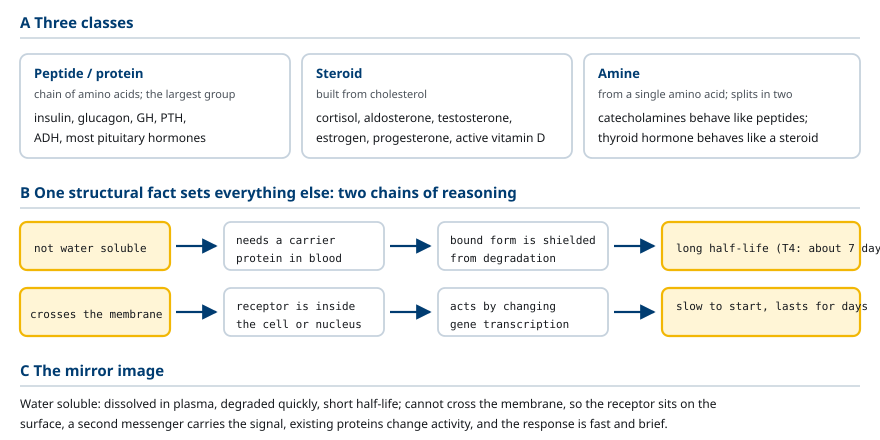
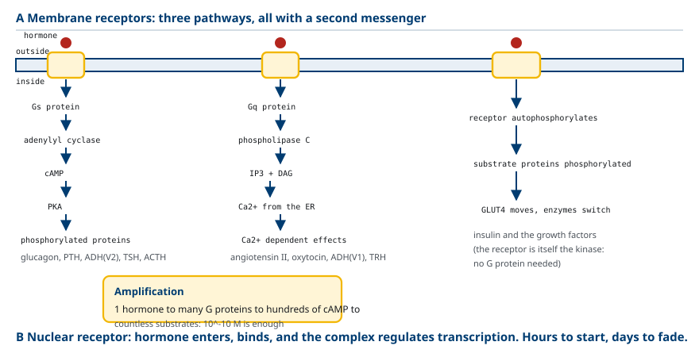
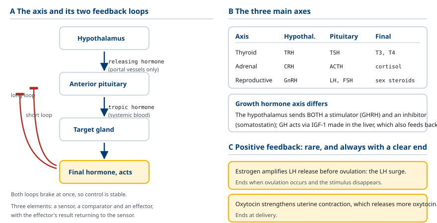
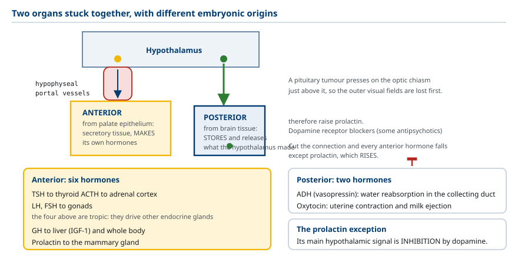
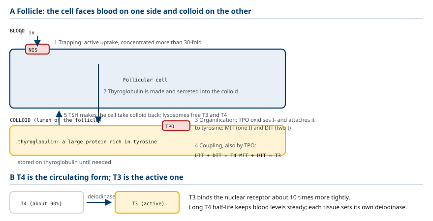
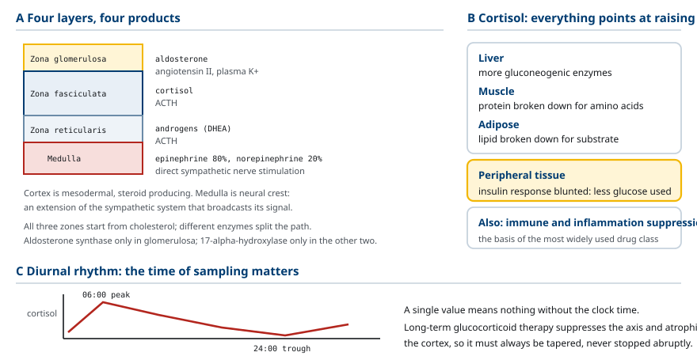
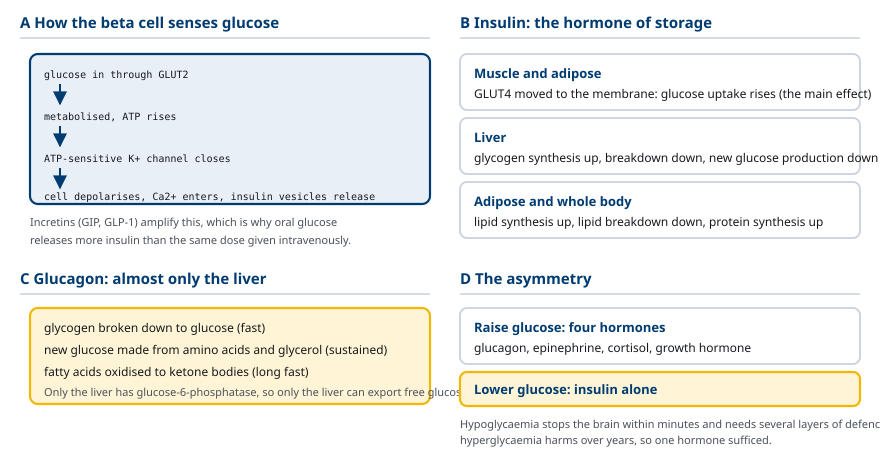
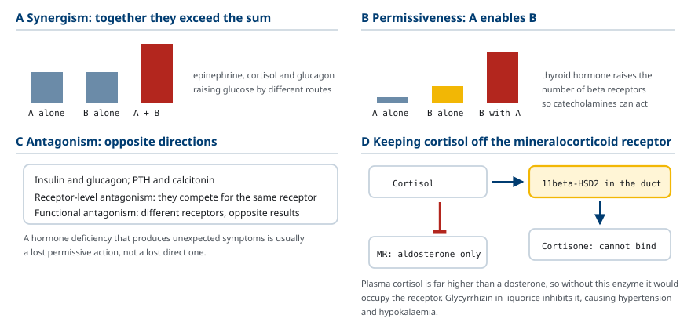

M01-W02-L02 · 인체일반생물학과 기초세포생물학
내분비계 요약: 호르몬과 되먹임
The Endocrine System: Hormones and Feedback
학습목표
- 내분비 신호 전달을 신경 신호 전달과 네 가지 기준으로 비교하고 각 방식이 적합한 상황을 구분한다.
- 호르몬을 화학 구조에 따라 세 부류로 나누고 각 부류의 용해도·운반 방식·반감기·수용체 위치를 표로 정리한다.
- 수용체가 세포막에 있는 경우와 핵 안에 있는 경우의 신호 전달 경로와 반응 속도 차이를 설명한다.
- 음성 되먹임의 구조를 세 요소로 나누어 설명하고 시상하부–뇌하수체–표적기관 축에서 되먹임이 작용하는 지점을 지목한다.
- 뇌하수체 전엽과 후엽의 발생학적·구조적 차이를 설명하고 각 엽에서 나오는 호르몬을 구분한다.
- 갑상샘 호르몬의 합성 단계를 순서대로 쓰고 T4와 T3의 관계를 설명한다.
- 부신 겉질의 세 층에서 나오는 호르몬을 구분하고 cortisol의 대사 작용을 설명한다.
- 혈당 조절에서 insulin과 glucagon이 작용하는 기관과 경로를 구분해 설명한다.
- 호르몬 분비 이상을 과다와 부족으로 나누고 되먹임 축의 어느 지점에 문제가 있는지로 원발성과 이차성을 구분한다.
- 호르몬 작용의 세 가지 상호작용 양식을 정의하고 사례를 든다.
선수지식
- M01-W01-L01 순환계 요약 — RAAS, aldosterone, 혈압 조절
- M01-W02-L01 신장 요약 — aldosterone과 ADH의 작용 지점, vitamin D 활성화, PTH
- 세포막 수송과 수용체의 기본 개념
강의 구성
- 1. 내분비 신호 전달이 해결하는 문제
- 2. 호르몬의 세 부류
- 3. 수용체와 신호 전달
- 4. 음성 되먹임과 시상하부–뇌하수체 축
- 5. 뇌하수체: 두 개의 서로 다른 기관
- 6. 갑상샘 호르몬
- 7. 부신: 겉질과 속질
- 8. 혈당 조절: insulin과 glucagon
- 9. 호르몬 작용의 상호작용 양식
- 10. 칼슘·인 항상성과 뼈의 내분비 조절
- 11. 성장의 내분비 조절
- 12. 내분비 검사의 논리
- 13. 내분비 질환을 읽는 기본 논리
1. 내분비 신호 전달이 해결하는 문제
다세포 생물의 세포들은 서로 조율되어야 한다. 조율의 방식은 두 가지이며, 둘은 경쟁 관계가 아니라 서로 다른 종류의 문제에 적합한 서로 다른 해법이다.
신경 신호 전달은 특정 세포에 전기 신호를 보내 즉시 반응을 일으킨다. 내분비 신호 전달은 호르몬을 혈액에 풀어 그 수용체를 가진 모든 세포에 작용한다. 네 기준으로 비교하면 차이가 분명해진다.
| 비교 기준 | 신경 | 내분비 |
|---|---|---|
| 표적의 지정 방식 | 해부학적 연결 (축삭이 닿는 곳) | 수용체의 존재 (수용체를 가진 모든 세포) |
| 전달 속도 | 밀리초 | 초~시간 |
| 작용 지속 시간 | 짧음 | 길다 |
| 적합한 과제 | 빠르고 국소적인 반응 | 느리고 전신적·지속적인 조절 |
이 비교에서 중요한 결론이 나온다. 내분비 신호에서 표적을 정하는 것은 호르몬이 아니라 수용체다. 호르몬은 혈액을 타고 몸 전체를 돌지만, 수용체가 없는 세포는 그 호르몬을 느끼지 못한다. 반대로 한 호르몬이 여러 기관의 수용체에 작용해 서로 다른 효과를 낼 수도 있다. Angiotensin II가 혈관에서는 수축을, 부신에서는 aldosterone 분비를, 시상하부에서는 갈증을 일으키는 것이 그 예다.
내분비 신호 전달이 적합한 과제는 다음과 같은 성질을 가진다. 여러 기관이 동시에 같은 방향으로 움직여야 하고, 효과가 오래 유지되어야 하고, 반응의 세기를 연속적으로 조절할 수 있어야 한다. 성장, 대사, 생식, 체액량 조절이 모두 이 성질을 가진다.
용어를 구분해야 한다. 내분비(endocrine) 는 호르몬을 혈액으로 내보내 멀리 있는 표적에 작용하는 방식이다. 외분비(exocrine) 는 관을 통해 체외나 소화관 lumen으로 분비하는 방식이며, 소화 효소가 그 예다. 그 밖에 분비한 세포 주위의 세포에 작용하는 paracrine, 분비한 세포 자신에 작용하는 autocrine 방식도 있다.

2. 호르몬의 세 부류
호르몬은 화학 구조에 따라 세 부류로 나뉘며, 구조가 그 호르몬의 거의 모든 성질을 결정한다.
Peptide·단백질 호르몬. 아미노산이 이어진 사슬이다. 가장 수가 많다. Insulin, glucagon, growth hormone, PTH, ADH, 뇌하수체 호르몬 대부분이 여기 속한다. 물에 녹으므로 혈액에 그대로 녹아 운반되고, 세포막을 통과하지 못하므로 수용체가 세포막에 있다. 미리 합성해 소포에 저장해 두고 자극이 오면 방출하므로 반응이 빠르다. 혈액에서 분해 효소에 노출되므로 반감기가 짧다(수 분).
Steroid 호르몬. Cholesterol에서 만들어지는 분자들이다. Cortisol, aldosterone, 성호르몬(testosterone, estrogen, progesterone), 그리고 활성형 vitamin D가 여기 속한다. 지질에 녹으므로 혈액에서는 운반 단백질에 결합해 다니고, 세포막을 자유롭게 통과하므로 수용체가 세포 안(세포질 또는 핵) 에 있다. 저장되지 않고 필요할 때 cholesterol로부터 합성되므로 분비까지 시간이 걸린다. 운반 단백질에 결합한 상태는 분해되지 않으므로 반감기가 길다(수십 분~수 시간).
Amine 호르몬. 단일 아미노산에서 유래한 분자들이다. Tyrosine에서 만들어지는 catecholamine(epinephrine, norepinephrine, dopamine)과 갑상샘 호르몬(T3, T4), 그리고 tryptophan에서 만들어지는 melatonin이 있다. 이 부류는 성질이 둘로 갈린다. Catecholamine은 물에 녹고 세포막 수용체를 쓰며 반감기가 짧아 peptide 호르몬처럼 행동한다. 갑상샘 호르몬은 지질에 녹고 핵 수용체를 쓰며 반감기가 매우 길어 steroid처럼 행동한다.
| 비교 항목 | Peptide | Steroid | Catecholamine | 갑상샘 호르몬 |
|---|---|---|---|---|
| 원료 | 아미노산 사슬 | cholesterol | tyrosine | tyrosine + iodine |
| 물에 대한 용해도 | 높음 | 낮음 | 높음 | 낮음 |
| 혈중 운반 | 그대로 녹아서 | 운반 단백질에 결합 | 그대로 녹아서 | 운반 단백질에 결합 |
| 저장 | 소포에 저장 | 저장 안 함 | 소포에 저장 | colloid에 저장 |
| 수용체 위치 | 세포막 | 세포 안 | 세포막 | 핵 |
| 주된 작용 방식 | 기존 단백질의 활성 변화 | 유전자 발현 변화 | 기존 단백질의 활성 변화 | 유전자 발현 변화 |
| 반응 속도 | 초~분 | 시간 | 초 | 시간~일 |
| 반감기 | 분 | 수십 분~시간 | 초~분 | 일 (T4는 약 7일) |
이 표의 각 행이 서로 독립적이지 않다는 점에 주의해야 한다. 물에 녹지 않는다 → 운반 단백질이 필요하다 → 분해로부터 보호된다 → 반감기가 길다가 하나의 연쇄다. 또한 세포막을 통과한다 → 수용체가 세포 안에 있다 → 유전자 발현을 바꾼다 → 반응이 느리고 오래간다가 또 하나의 연쇄다. 구조 하나를 알면 나머지를 추론할 수 있다.

3. 수용체와 신호 전달
호르몬이 표적 세포에서 반응을 일으키는 경로는 수용체의 위치에 따라 둘로 나뉜다.
세포막 수용체 경로. 호르몬이 세포 밖에서 수용체에 결합하고, 신호가 막을 건너 세포 안으로 전달된다. 호르몬 자신은 세포에 들어가지 않으므로 2차 전령(second messenger) 이 필요하다. 주요 경로는 세 가지다.
- G 단백질 연결 수용체 – cAMP 경로: 수용체가 Gs 단백질을 활성화하면 adenylyl cyclase가 ATP로부터 cAMP를 만들고, cAMP가 protein kinase A를 활성화해 여러 단백질을 인산화한다. Glucagon, PTH, ADH(V2), TSH, ACTH가 이 경로를 쓴다. Gi 단백질에 연결되면 반대로 cAMP를 줄인다.
- G 단백질 연결 수용체 – IP₃/Ca²⁺ 경로: Gq 단백질이 phospholipase C를 활성화하면 막의 인지질로부터 IP₃와 DAG가 생기고, IP₃가 ER에서 Ca²⁺을 방출시킨다. Angiotensin II, oxytocin, ADH(V1), TRH가 이 경로를 쓴다.
- 수용체 tyrosine kinase 경로: 수용체 자신이 kinase 활성을 가져 결합 시 자신과 기질 단백질을 인산화한다. Insulin과 여러 성장인자가 이 경로를 쓴다.
세포막 수용체 경로의 특징은 증폭(amplification) 이다. 한 개의 호르몬 분자가 한 개의 수용체를 활성화하면, 그 수용체가 여러 개의 G 단백질을, 각 adenylyl cyclase가 수백 개의 cAMP를, 각 PKA가 수많은 기질을 처리한다. 단계마다 배수가 곱해지므로 매우 낮은 호르몬 농도(10⁻¹⁰ M 수준)로도 큰 반응을 만들 수 있다.
핵 수용체 경로. 호르몬이 세포막을 통과해 들어와 세포질이나 핵의 수용체에 결합한다. 결합한 복합체가 DNA의 특정 서열(hormone response element)에 붙어 전사를 조절한다. 결과는 새로운 단백질의 합성 또는 억제다.
이 차이가 반응 속도를 결정한다. 세포막 수용체 경로는 이미 있는 단백질의 활성을 바꾸므로 수 초에서 수 분 안에 효과가 나타난다. 핵 수용체 경로는 전사와 번역을 거쳐야 하므로 수 시간이 걸리고, 만들어진 단백질이 분해될 때까지 효과가 지속되므로 수 일간 유지될 수 있다.
수용체의 수도 조절 대상이다. 호르몬 농도가 오래 높게 유지되면 세포가 수용체 수를 줄여(down-regulation) 반응을 줄이고, 농도가 오래 낮으면 수용체를 늘려(up-regulation) 반응을 키운다. 즉 같은 호르몬 농도가 항상 같은 반응을 일으키지 않는다.

4. 음성 되먹임과 시상하부–뇌하수체 축
내분비 조절의 핵심 원리가 음성 되먹임(negative feedback) 이다. 구조는 세 요소로 이루어진다.
1. 감지기(sensor): 조절 대상의 현재 값을 읽는다. 2. 비교·명령 중추: 현재 값을 기준값과 비교해 교정 명령을 낸다. 3. 실행기(effector): 명령에 따라 조절 대상을 바꾼다.
핵심은 실행기의 작용 결과가 감지기로 되돌아가 명령을 줄인다는 점이다. 그 결과 조절 대상이 기준값 주위의 좁은 범위에 머문다. 혈당, 혈중 Ca²⁺, 체온, 혈장 삼투압이 모두 이 방식으로 유지된다.
내분비계에서 음성 되먹임이 가장 정교하게 구현된 형태가 시상하부–뇌하수체–표적기관 축(hypothalamic–pituitary–target axis) 이다. 세 단계의 계층 구조를 가진다.
1. 시상하부가 방출 호르몬(releasing hormone)을 내보낸다. 이 호르몬은 전신 혈액이 아니라 시상하부와 뇌하수체 전엽을 잇는 특수한 혈관(hypophyseal portal system)으로 바로 전달된다. 적은 양으로 충분하고 전신에 영향을 주지 않는다. 2. 뇌하수체 전엽이 자극 호르몬(tropic hormone)을 전신 혈액으로 내보낸다. 3. 표적 기관이 최종 호르몬을 내보내고, 이것이 몸 전체에 작용한다.
되먹임은 두 지점에서 작용한다. 최종 호르몬이 뇌하수체에 작용해 자극 호르몬 분비를 줄이고(짧은 고리), 시상하부에도 작용해 방출 호르몬 분비를 줄인다(긴 고리). 두 지점에서 동시에 제동이 걸리므로 조절이 안정적이다.
주요 세 축은 다음과 같다.
| 축 | 시상하부 | 뇌하수체 전엽 | 표적 기관 | 최종 호르몬 |
|---|---|---|---|---|
| 갑상샘 축 | TRH | TSH | 갑상샘 | T3, T4 |
| 부신 축 | CRH | ACTH | 부신 겉질 | cortisol |
| 생식 축 | GnRH | LH, FSH | 생식샘 | testosterone, estrogen |
성장호르몬 축은 조금 다르다. 시상하부가 촉진 호르몬(GHRH)과 억제 호르몬(somatostatin)을 둘 다 보내며, 성장호르몬은 간에서 IGF-1을 만들어 그것이 성장 효과를 내고 되먹임도 담당한다.
양성 되먹임(positive feedback) 도 드물게 쓰인다. 작용 결과가 명령을 더 키우는 구조이므로 불안정하지만, 짧은 시간에 극적인 변화가 필요한 상황에서 쓸모가 있다. 배란 전 estrogen이 LH 분비를 증폭시켜 LH 급증을 만드는 것, 분만 중 oxytocin이 자궁 수축을 강화하고 그 수축이 다시 oxytocin을 늘리는 것이 예다. 두 경우 모두 종료 시점이 분명하다는 공통점이 있다. 배란이 일어나거나 아기가 나오면 자극이 사라져 고리가 끊긴다.

5. 뇌하수체: 두 개의 서로 다른 기관
뇌하수체는 하나의 구조물처럼 보이지만 발생 과정과 작동 방식이 전혀 다른 두 부분이 붙어 있는 것이다. 이 사실을 알면 두 엽의 호르몬 목록을 외우지 않아도 구분할 수 있다.
전엽(anterior pituitary, adenohypophysis) 은 발생 과정에서 입천장의 상피가 위로 자라 올라와 만들어진다. 즉 분비 상피 조직이다. 따라서 호르몬을 스스로 만든다. 시상하부와는 혈관(hypophyseal portal system)으로만 연결되며, 신경 연결은 없다.
전엽에서 나오는 호르몬은 여섯 가지다.
- TSH: 갑상샘을 자극한다
- ACTH: 부신 겉질을 자극한다
- LH, FSH: 생식샘을 자극한다
- GH: 간에서 IGF-1 생성을 자극하고 전신 성장과 대사에 작용한다
- Prolactin: 유선의 젖 생산을 자극한다
앞의 네 가지는 다른 내분비 기관을 자극하는 자극 호르몬이고, 뒤의 두 가지는 비내분비 조직에 직접 작용한다.
후엽(posterior pituitary, neurohypophysis) 은 발생 과정에서 뇌의 일부가 아래로 자라 내려와 만들어진다. 즉 신경 조직이다. 따라서 호르몬을 만들지 못한다. 시상하부의 신경 세포체에서 만들어진 호르몬이 축삭을 따라 내려와 후엽의 축삭 말단에 저장되어 있다가, 신경 자극이 오면 방출된다. 후엽은 저장과 방출의 장소일 뿐이다.
후엽에서 방출되는 호르몬은 두 가지다.
- ADH(vasopressin): 집합관에서 물 재흡수를 늘린다(앞 수업)
- Oxytocin: 자궁 수축과 젖 사출을 일으킨다
Prolactin의 조절은 예외적이어서 따로 알아 둘 만하다. 시상하부가 prolactin에 대해 보내는 주된 신호는 억제 신호이며, 그 분자는 dopamine이다. 즉 시상하부와의 연결이 끊기면 다른 전엽 호르몬은 모두 줄어드는데 prolactin만 늘어난다. Dopamine 수용체를 차단하는 약물(일부 항정신병약)이 prolactin을 올려 유즙 분비와 생리 불규칙을 일으키는 이유가 여기에 있다.

6. 갑상샘 호르몬
갑상샘 호르몬은 기초대사율을 정하는 호르몬이며, 거의 모든 세포에 수용체가 있다. 합성 과정이 독특해 단계별로 알아 둘 필요가 있다.
갑상샘의 구조는 follicle이라 부르는 공 모양 단위들로 이루어진다. Follicle의 벽은 한 겹의 상피세포이고, 안쪽 공간에는 colloid라 부르는 걸쭉한 물질이 차 있다. Colloid의 주성분은 thyroglobulin이라는 큰 단백질이며, 이것이 갑상샘 호르몬의 저장 형태다.
합성 단계는 다음과 같다.
1. Iodide 포획(trapping): 세포의 혈액 쪽 막에 있는 Na⁺/I⁻ symporter(NIS) 가 혈액의 I⁻을 세포 안으로 능동적으로 들여온다. 혈액보다 30배 이상 농축한다. 2. Thyroglobulin 합성과 분비: 세포가 thyroglobulin을 만들어 colloid로 내보낸다. 이 단백질에는 tyrosine 잔기가 많다. 3. 산화와 유기화(organification): Thyroid peroxidase(TPO) 가 I⁻을 산화하고, thyroglobulin의 tyrosine 잔기에 붙인다. Iodine이 하나 붙으면 monoiodotyrosine(MIT), 둘 붙으면 diiodotyrosine(DIT)이 된다. 4. 결합(coupling): 같은 TPO가 두 개의 iodotyrosine을 연결한다. DIT + DIT = T4(thyroxine, iodine 4개), MIT + DIT = T3(iodine 3개). 이 상태로 thyroglobulin에 붙어 colloid에 저장된다. 5. 방출: TSH 자극이 오면 세포가 colloid를 다시 흡수하고, lysosome의 효소가 thyroglobulin을 분해해 T3와 T4를 떼어내 혈액으로 내보낸다.
여기서 중요한 사실이 있다. 갑상샘이 분비하는 것은 주로 T4(약 90%)인데, 수용체에 결합해 작용하는 것은 주로 T3다. T3의 수용체 친화도가 T4의 약 10배이기 때문이다. T4는 표적 조직(주로 간과 신장)에서 deiodinase에 의해 iodine 하나를 떼어내 T3로 바뀐다. 즉 T4는 혈중을 도는 전구체 겸 저장 형태이고, T3가 활성 형태다.
이 구조의 이점은 두 가지다. 첫째, T4의 반감기가 약 7일로 길어 혈중 농도가 안정하다. 둘째, 각 조직이 자신의 deiodinase 활성을 조절해 필요한 만큼만 T3를 만들 수 있어 조직 수준의 미세 조절이 가능하다.
갑상샘 호르몬의 작용은 핵 수용체를 통한 유전자 발현 조절이며, 주된 효과는 다음과 같다.
- 기초대사율 상승: Na⁺/K⁺-ATPase를 비롯한 여러 단백질의 발현을 늘려 산소 소비와 열 생산을 늘린다.
- 심장에 대한 작용: β 수용체의 수를 늘려 catecholamine에 대한 민감도를 높인다. 갑상샘 기능 과다에서 심박수와 수축력이 올라가는 이유다.
- 성장과 신경 발달: 특히 태아와 신생아 시기에 필수적이다. 결핍되면 되돌릴 수 없는 지적 장애와 성장 장애가 생긴다.

7. 부신: 겉질과 속질
부신도 뇌하수체처럼 발생 기원이 다른 두 부분이 합쳐진 기관이다. 바깥의 겉질(cortex) 은 중배엽에서 유래한 steroid 생산 조직이고, 안의 속질(medulla) 은 신경능에서 유래한 변형된 신경 조직이다.
부신 속질은 교감신경의 연장으로 보아야 한다. 교감신경절전 뉴런이 직접 자극하면 epinephrine(약 80%)과 norepinephrine(약 20%) 을 혈액으로 방출한다. 즉 신경 자극에 의해 호르몬이 나오는 구조이며, 교감신경 반응을 전신에 확산시키는 역할을 한다.
부신 겉질은 세 층으로 나뉘고 각 층에서 서로 다른 steroid가 나온다. 바깥에서 안으로 순서대로 다음과 같다.
| 층 | 생산 호르몬 | 주된 조절 자극 | 주된 작용 |
|---|---|---|---|
| Zona glomerulosa (가장 바깥) | aldosterone (mineralocorticoid) | angiotensin II, 혈중 K⁺ | 신장 Na⁺ 재흡수, K⁺ 분비 |
| Zona fasciculata (중간, 가장 두껍다) | cortisol (glucocorticoid) | ACTH | 대사, 스트레스 반응, 면역 억제 |
| Zona reticularis (가장 안쪽) | androgen (DHEA 등) | ACTH | 약한 남성 호르몬 작용 |
세 층 모두 cholesterol에서 출발하지만, 각 층이 가진 효소가 달라 경로가 갈라진다. Zona glomerulosa에만 aldosterone synthase가 있고, zona fasciculata와 reticularis에만 17α-hydroxylase가 있다.
Cortisol은 가장 중요한 glucocorticoid이며, 이름대로 포도당 대사에 작용한다. 주된 작용은 혈당을 올리는 방향으로 정리된다.
- 간: 아미노산과 glycerol로부터 glucose를 새로 만드는 과정(gluconeogenesis)에 필요한 효소의 발현을 늘린다.
- 근육: 단백질을 분해해 아미노산을 내보내 간에 원료를 공급한다. 오래 쓰면 근육이 줄어든다.
- 지방 조직: 지질을 분해해 지방산과 glycerol을 내보낸다. 동시에 몸통과 얼굴에는 지방이 쌓이는 특이한 재분포가 일어난다.
- 말초 조직: Insulin에 대한 반응을 둔하게 만들어 포도당 이용을 줄인다.
Cortisol의 다른 중요한 작용이 면역과 염증 억제다. 염증 매개체의 생산을 줄이고, 면역 세포의 활성과 이동을 억제한다. 이 작용이 glucocorticoid를 임상에서 가장 널리 쓰이는 약물 계열 가운데 하나로 만들었다.
Cortisol 분비는 일중 변동(diurnal rhythm) 을 보인다. 이른 아침에 가장 높고 밤에 가장 낮다. 따라서 cortisol을 측정할 때는 채혈 시각을 반드시 함께 기록해야 하며, 한 번의 수치만으로 판단할 수 없다.

8. 혈당 조절: insulin과 glucagon
혈당 조절은 내분비 조절의 원리를 가장 선명하게 보여 주는 예다. 두 호르몬이 반대 방향으로 작용하며, 둘 다 췌장의 islet of Langerhans에서 나온다. β cell이 insulin을, α cell이 glucagon을, δ cell이 somatostatin을 분비한다.
Insulin: 혈당을 내리는 유일한 호르몬. 분비 자극은 혈당 상승이며, 앞 수업에서 본 incretin(GIP, GLP-1)이 이를 증폭한다. 분비 기전은 다음과 같다. 혈당이 올라가면 β cell이 GLUT2로 포도당을 받아들이고, 대사해 ATP를 만든다. ATP가 ATP 민감성 K⁺ 통로를 닫으면 세포가 탈분극하고, Ca²⁺ 통로가 열려 들어온 Ca²⁺이 insulin 소포의 방출을 일으킨다.
Insulin은 수용체 tyrosine kinase를 통해 작용하며, 기관별 효과는 다음과 같다.
- 근육과 지방 조직: GLUT4 수송체를 세포막으로 이동시켜 포도당 흡수를 늘린다. 이것이 혈당을 내리는 주된 기전이다.
- 간: Glycogen 합성을 촉진하고 분해를 억제한다. Glucose를 새로 만드는 과정도 억제한다.
- 지방 조직: 지질 합성을 촉진하고 분해를 억제한다.
- 전신: 아미노산 흡수와 단백질 합성을 촉진한다.
Insulin을 저장의 호르몬으로 이해하는 것이 좋다. 영양소가 들어온 상태에서 그것을 세포로 들여보내고 저장 형태로 바꾸는 모든 방향으로 작용한다.
Glucagon: 혈당을 올리는 호르몬. 분비 자극은 혈당 저하다. 표적은 거의 전적으로 간이며, cAMP 경로를 통해 작용한다.
- Glycogen을 분해해 glucose를 내보낸다(빠른 반응)
- 아미노산과 glycerol로부터 glucose를 새로 만든다(지속적 반응)
- 지방산을 산화해 ketone body를 만든다(긴 공복에서)
Insulin과 glucagon의 표적 차이에 주목해야 한다. Insulin은 여러 기관에 작용하고, glucagon은 거의 간에만 작용한다. 혈당을 내리려면 여러 곳에서 포도당을 거두어들여야 하지만, 올리려면 포도당을 내보낼 수 있는 곳이 간뿐이기 때문이다.
혈당을 올리는 호르몬은 glucagon 하나가 아니다. Epinephrine(빠른 반응), cortisol(지속적 반응), growth hormone이 모두 혈당을 올린다. 반면 혈당을 내리는 호르몬은 insulin 하나뿐이다. 이 비대칭은 생존 조건에서 나온다. 저혈당은 수 분 안에 뇌 기능을 멈추게 하므로 여러 겹의 방어가 필요하고, 고혈당은 급성으로는 덜 위험하다.

9. 호르몬 작용의 상호작용 양식
호르몬은 혼자 작용하지 않는다. 여러 호르몬이 같은 표적에 함께 작용할 때 나타나는 양식을 세 가지로 구분하면 복잡한 상황을 정리할 수 있다.
상승(synergism). 두 호르몬이 함께 작용할 때의 효과가 각각의 효과를 더한 것보다 크다. 혈당을 올리는 데 epinephrine, cortisol, glucagon이 함께 작용하면 각각의 합보다 큰 상승이 나타난다. 서로 다른 경로를 통해 같은 결과를 향하기 때문이다.
허용(permissiveness). 한 호르몬이 자신은 효과를 내지 않으면서 다른 호르몬의 효과가 나타날 수 있게 한다. 갑상샘 호르몬이 β 수용체의 수를 늘려 catecholamine의 효과를 가능하게 하는 것이 대표적이다. 갑상샘 호르몬 자신은 심박수를 직접 크게 올리지 않지만, 그것이 없으면 catecholamine도 효과를 내지 못한다. Cortisol이 catecholamine의 혈관 수축 작용에 대해 가지는 허용 작용도 같은 범주이며, 부신 기능 저하 환자에서 혈압이 유지되지 않는 이유가 여기에 있다.
길항(antagonism). 두 호르몬이 반대 방향으로 작용한다. Insulin과 glucagon, PTH와 calcitonin이 예다. 길항은 다시 두 종류로 나뉜다. 같은 수용체를 두고 경쟁하는 경우(수용체 수준 길항)와, 서로 다른 수용체를 통해 반대 결과를 만드는 경우(기능적 길항)다. Insulin과 glucagon은 후자다.
호르몬 수용체의 교차 작용도 알아 둘 만하다. 구조가 비슷한 호르몬은 서로의 수용체에 약하게 결합할 수 있다. Aldosterone과 cortisol이 대표적인 예다. 둘 다 steroid이고 구조가 비슷해 cortisol도 mineralocorticoid 수용체에 결합할 수 있으며, 혈중 cortisol 농도가 aldosterone보다 훨씬 높으므로 이론적으로는 cortisol이 그 수용체를 점령할 것이다.
이 문제를 해결하는 장치가 신장에 있다. 집합관 세포에는 11β-hydroxysteroid dehydrogenase type 2라는 효소가 있어 cortisol을 수용체에 결합하지 못하는 cortisone으로 바꾼다. 즉 수용체에 도달하기 전에 cortisol을 없애 aldosterone만 작용하게 한다. 이 효소를 억제하는 물질(감초의 glycyrrhizin이 대표)을 많이 섭취하면 cortisol이 mineralocorticoid 수용체를 자극해 고혈압과 저칼륨혈증이 생긴다.

10. 칼슘·인 항상성과 뼈의 내분비 조절
혈중 칼슘은 좁은 범위(약 8.5~10.5 mg/dL)로 유지된다. 범위를 벗어나면 신경과 근육의 흥분성이 곧바로 바뀌므로 다른 어떤 전해질보다 엄격하게 지켜진다. 이 조절은 세 기관과 세 호르몬이 맞물려 돌아간다.
기관은 뼈(저장고), 장(유입), 신장(배출)이고, 호르몬은 PTH, 활성형 vitamin D, FGF23이다. Calcitonin은 사람에서 생리적 비중이 작다.
혈중 칼슘의 형태. 전체 칼슘의 약 45%가 albumin에 결합해 있고, 약 45%가 이온화된 자유 칼슘, 나머지가 음이온과 복합체를 이룬다. 생리 활성을 가지는 것은 이온화 칼슘뿐이다. 두 가지 결과가 따라온다. 첫째, albumin이 낮으면 총 칼슘이 낮게 측정되지만 이온화 칼슘은 정상이므로 증상이 없다(보정식: 총 칼슘 + 0.8 × (4 − albumin)). 둘째, 알칼리증에서는 albumin의 음전하가 늘어 칼슘을 더 붙잡으므로 총 칼슘이 정상인데도 이온화 칼슘이 떨어져 손발 저림과 경련이 생긴다. 과호흡 환자의 수족 경련이 이 기전이다.
PTH. 부갑상샘 주세포의 칼슘 감지 수용체(CaSR) 가 혈중 이온화 칼슘을 직접 감지한다. 칼슘이 떨어지면 PTH가 분비되어 세 방향으로 작용한다.
- 뼈: 골흡수를 자극해 칼슘과 인을 함께 내놓는다. 흥미롭게도 PTH는 osteoclast에 직접 작용하지 않는다. Osteoblast 계열 세포가 RANKL을 내고 이것이 osteoclast 전구세포의 RANK에 결합해 분화와 활성을 일으킨다. OPG는 RANKL을 가로채는 미끼 수용체다.
- 신장: 원위세뇨관에서 칼슘 재흡수를 늘리고, 근위세뇨관에서 인 재흡수를 줄인다(인을 버린다). 또한 1α-hydroxylase를 활성화한다.
- 장(간접): 활성형 vitamin D를 통해 칼슘과 인의 흡수를 늘린다.
방향이 갈리는 지점이 여기다. PTH는 칼슘은 올리고 인은 내린다. 반면 활성형 vitamin D는 칼슘과 인을 모두 올린다. 두 호르몬의 인에 대한 방향이 반대라는 점이 질환 감별의 핵심이 된다.
FGF23. 골세포(osteocyte)가 인이 쌓일 때 분비한다. 신장에서 인 재흡수를 줄이고 1α-hydroxylase를 억제한다. 즉 인만 전문으로 내리는 호르몬이며, vitamin D까지 함께 억제한다는 점에서 PTH와 다르다.
| 상태 | 혈중 Ca | 혈중 P | PTH |
|---|---|---|---|
| 일차성 부갑상샘 기능항진증 | 증가 | 감소 | 증가 |
| 부갑상샘 기능저하증 | 감소 | 증가 | 감소 |
| Vitamin D 결핍 | 감소 또는 정상 | 감소 | 증가(이차성) |
| 만성 신질환 | 감소 | 증가 | 증가(이차성) |
| 악성종양의 체액성 고칼슘혈증(PTHrP) | 증가 | 감소 | 감소 |
11. 성장의 내분비 조절
성장은 한 호르몬이 아니라 시기마다 다른 주역이 이끈다. 이 사실 자체가 내분비 조절의 성격을 보여 준다.
| 시기 | 성장을 주로 이끄는 것 |
|---|---|
| 태아기 | insulin, IGF-2, 영양 공급(GH는 거의 관여하지 않는다) |
| 영아기 | 영양 상태 |
| 소아기 | GH–IGF-1 축, 갑상샘 호르몬 |
| 사춘기 | 성호르몬 + GH의 상승 작용 |
GH–IGF-1 축. 시상하부가 GHRH(촉진)와 somatostatin(억제) 두 호르몬으로 뇌하수체 전엽을 조절하고, GH는 간에서 IGF-1을 만들게 한다. 성장판에 직접 작용하는 것은 주로 IGF-1이며, GH는 지방 분해와 인슐린 저항을 올리는 대사 작용도 따로 가진다. 되먹임은 IGF-1이 시상하부와 뇌하수체를 억제하는 방식으로 닫힌다.
GH는 박동성으로 분비되고 깊은 수면 초기에 가장 큰 봉우리가 나온다. 따라서 무작위로 잰 GH 수치는 해석할 수 없다. 반면 IGF-1은 결합단백질에 실려 반감기가 길고 하루 동안 안정적이므로 축의 평균 활성을 반영한다. 이 차이가 검사 선택을 정한다.
성장판. 긴뼈의 성장판에서 연골세포가 증식하고 비대해진 뒤 뼈로 치환되며 길이가 늘어난다. 성호르몬, 특히 estrogen이 성장판을 닫는다. 남성에서도 testosterone이 aromatase로 estrogen이 되어 작용하므로, aromatase 결핍이나 estrogen 수용체 결함이 있으면 성인이 되어도 성장판이 닫히지 않아 키가 계속 자란다. 사춘기에 키가 급히 크고 그 뒤 멈추는 것이 같은 호르몬의 두 작용이 시간차를 두고 나타나는 결과다.
과잉과 결핍. GH 과잉이 성장판이 닫히기 전에 생기면 거인증, 닫힌 뒤에 생기면 말단비대증이 된다. 길이로 자랄 수 없으므로 손발, 턱, 이마처럼 막성 골화가 계속되는 부위가 굵어진다. 결핍은 성장 속도의 저하로 나타나며, 비례적 저신장이 특징이다.
12. 내분비 검사의 논리
내분비 질환의 진단은 "호르몬 수치를 재면 된다"로 끝나지 않는다. 수치를 해석하려면 네 가지를 함께 따져야 한다.
1. 짝을 지어 본다. 호르몬 하나만으로는 의미가 정해지지 않는다. 축의 위와 아래를 함께 보아야 병변의 위치가 나온다. 갑상샘 호르몬이 낮은데 TSH가 높으면 갑상샘 자체의 문제(일차성)이고, TSH도 낮거나 부적절하게 정상이면 뇌하수체나 시상하부의 문제(이차성·삼차성)다. 낮은 호르몬에 낮은 자극 호르몬이 짝지어진 것은 그 자체로 이상이라는 점이 요점이다.
2. 결합단백질과 자유 호르몬을 구분한다. 갑상샘 호르몬은 대부분 thyroxine-binding globulin에 실려 있고, cortisol은 cortisol-binding globulin에, 성호르몬은 SHBG에 실려 있다. 활성을 가지는 것은 자유 형태뿐이다. 임신이나 경구 estrogen은 TBG를 늘리므로 총 T4는 올라가지만 free T4는 정상이다. 간경변과 신증후군에서는 결합단백질이 줄어 반대가 된다. 그래서 갑상샘 기능은 free T4로 판단한다.
3. 시간을 고려한다. 호르몬은 일정하게 나오지 않는다. Cortisol은 새벽에 가장 높고 자정에 가장 낮으며, GH와 LH는 박동성으로 나온다. 따라서 무작위 수치가 해석되지 않는 호르몬이 있다. Cortisol은 측정 시각을 정하거나 자정 타액 cortisol을 쓰고, GH는 IGF-1로 대신하며, LH는 박동을 포착하기 위해 반복 측정하거나 자극 검사를 쓴다.
4. 되먹임을 이용해 검사를 설계한다. 이것이 내분비 검사의 핵심 원리다.
- 기능 과다가 의심되면 억제 검사. 정상이라면 되먹임으로 억제되어야 하는데 억제되지 않으면 자율적 분비다. Cushing 증후군에서 dexamethasone 억제 검사, 말단비대증에서 경구 당부하 후 GH 억제 검사가 그 예다.
- 기능 저하가 의심되면 자극 검사. 정상이라면 자극에 반응해 올라가야 하는데 오르지 않으면 예비력이 없는 것이다. 부신 기능저하에서 ACTH 자극 검사, GH 결핍에서 insulin 저혈당 검사가 그 예다.
5. 측정법 자체의 함정을 안다. 호르몬은 대부분 면역측정법으로 재며, 세 가지 전형적인 오류가 있다. Hook 효과는 항원 농도가 지나치게 높을 때 오히려 낮게 측정되는 현상으로, 거대 prolactinoma에서 prolactin이 정상처럼 나오는 원인이 된다. 희석해 다시 재면 드러난다. Biotin 간섭은 고용량 biotin 보충제가 streptavidin 기반 측정법을 교란해 호르몬에 따라 높게 또는 낮게 나오게 한다. 이종 항체 간섭은 환자 혈청의 항체가 측정 항체에 결합해 거짓 값을 만든다. 검사 결과가 임상 양상과 맞지 않으면 질환을 찾기 전에 측정을 의심하는 것이 순서다.
13. 내분비 질환을 읽는 기본 논리
내분비 질환은 두 축으로 분류하면 체계가 잡힌다. 과다인가 부족인가, 그리고 축의 어느 단계에 문제가 있는가다.
원발성(primary)과 이차성(secondary)의 구분이 핵심이다. 원발성은 최종 호르몬을 만드는 표적 기관 자체의 문제이고, 이차성은 뇌하수체(또는 시상하부)의 문제다. 두 호르몬을 함께 측정하면 구별된다.
| 상태 | 최종 호르몬 | 자극 호르몬 | 해석 |
|---|---|---|---|
| 원발성 기능 저하 | 낮음 | 높음 | 표적 기관이 반응하지 못해 되먹임 제동이 풀림 |
| 이차성 기능 저하 | 낮음 | 낮음 | 자극이 없어 표적 기관이 일하지 않음 |
| 원발성 기능 과다 | 높음 | 낮음 | 표적 기관이 과도하게 만들어 되먹임으로 자극이 억제됨 |
| 이차성 기능 과다 | 높음 | 높음 | 자극이 과도해 표적 기관이 과도하게 일함 |
이 표가 내분비 진단의 출발점이다. 예를 들어 갑상샘 기능 저하에서 TSH가 높으면 갑상샘 자체의 문제(Hashimoto 갑상샘염이 가장 흔하다)이고, TSH가 낮으면 뇌하수체의 문제다.
자극 검사와 억제 검사의 논리도 되먹임에서 나온다. 기능 저하가 의심되면 자극을 주어 반응하는지를 본다. 기능 과다가 의심되면 억제를 주어 억제되는지를 본다. 정상 조직은 되먹임에 반응하지만 종양은 반응하지 않는다는 원리를 이용한다. Cushing 증후군에서 dexamethasone 억제 검사를 하는 것이 그 예다.
주요 질환을 축별로 정리하면 다음과 같다.
- 갑상샘: 기능 과다의 대표가 Graves 병이며, TSH 수용체를 자극하는 자가항체가 원인이다. 자가항체가 되먹임과 무관하게 수용체를 계속 자극하므로 T3·T4가 높고 TSH는 억제된다. 기능 저하의 대표가 Hashimoto 갑상샘염으로 자가면역에 의한 갑상샘 파괴다.
- 부신: 기능 과다가 Cushing 증후군이며, 외부 투여가 가장 흔한 원인이고 그 외에 뇌하수체 종양(Cushing 병)과 부신 종양이 있다. 기능 저하가 Addison 병이며, 원발성인 경우 cortisol과 aldosterone이 함께 부족해 저혈압, 저나트륨혈증, 고칼륨혈증, 색소 침착(ACTH 증가에 따른)이 나타난다.
- 뇌하수체: 과다는 종양에 의한 것으로 prolactin, GH, ACTH 순으로 흔하다. 부족은 종양·수술·출혈에 의한 것으로, 여러 축이 함께 영향을 받는다.
- 부갑상샘: 과다에서 혈중 Ca²⁺이 올라가 결석, 뼈 통증, 변비, 의식 변화가 나타난다. 부족에서 Ca²⁺이 떨어져 근육 경련과 감각 이상이 나타난다.
- 췌장: 제1형과 제2형 당뇨병이 대표이며, 앞 절에서 다루었다.
수용체 수준의 문제도 범주 하나를 이룬다. 호르몬 농도는 충분하거나 오히려 높은데 효과가 나타나지 않는 상태다. 제2형 당뇨병의 insulin 저항성, androgen 수용체 결함에 의한 androgen 불감 증후군, PTH 수용체 이후 신호의 결함에 의한 가성 부갑상샘 기능 저하증이 예다. 이런 경우 호르몬을 더 투여해도 효과가 없다는 점이 치료의 제약이 된다.
확인 문항
내분비 신호 전달에서 표적을 결정하는 것이 무엇인지 쓰고, 그 원리에서 나오는 결과 두 가지를 설명하시오.
해설
표적을 결정하는 것은 호르몬이 아니라 수용체다. 호르몬은 혈액을 타고 몸 전체를 돌지만 수용체가 없는 세포는 반응하지 않는다. 결과는 두 가지다. 첫째, 하나의 호르몬이 여러 기관에 동시에 작용할 수 있다. 둘째, 같은 호르몬이 기관마다 다른 수용체를 통해 서로 다른 효과를 낼 수 있다. Angiotensin II가 혈관에서는 수축, 부신에서는 aldosterone 분비, 시상하부에서는 갈증을 일으키는 것이 그 예다.
Insulin이 주사제이고 prednisolone이 알약인 이유를 호르몬의 화학 구조와 연결해 설명하시오.
해설
Insulin은 peptide 호르몬이므로 소화관에서 단백질 분해 효소에 분해되어 경구 투여가 불가능하다. Prednisolone은 steroid이므로 지질에 녹아 소화관 상피의 세포막을 통과해 흡수되고, 분해 효소의 표적도 아니므로 경구 투여가 가능하다. 구조가 용해도를 정하고 용해도가 투여 경로를 정한다.
세포막 수용체 경로에서 일어나는 증폭을 단계별로 설명하고, 그 결과가 무엇을 가능하게 하는지 쓰시오.
해설
호르몬 한 분자가 수용체 하나를 활성화하면 그 수용체가 여러 개의 G 단백질을 활성화하고, 각 adenylyl cyclase가 수백 개의 cAMP를 만들고, 각 protein kinase A가 수많은 기질을 인산화한다. 단계마다 배수가 곱해지므로 10의 마이너스 10 제곱 M 수준의 매우 낮은 호르몬 농도로도 큰 세포 반응을 만들 수 있다.
시상하부가 방출 호르몬을 전신 혈액이 아니라 특수한 혈관으로 보내는 이점을 설명하시오.
해설
시상하부와 뇌하수체 전엽을 잇는 hypophyseal portal system으로 직접 전달하므로, 적은 양으로도 표적인 전엽에서 충분히 높은 농도를 만들 수 있다. 또한 전신 혈액으로 희석되지 않으므로 다른 기관에 영향을 주지 않는다. 적은 양으로 국소적으로 작용하게 하는 설계다.
뇌하수체 후엽이 호르몬을 스스로 만들지 못하는 이유를 발생학적 기원으로 설명하고, 이 사실이 두 엽의 호르몬 목록을 구분하는 데 어떻게 도움이 되는지 쓰시오.
해설
후엽은 뇌의 일부가 아래로 자라 내려와 만들어진 신경 조직이므로 분비 상피가 아니다. 시상하부의 신경 세포체에서 만들어진 호르몬이 축삭을 따라 내려와 후엽의 말단에 저장되어 있다가 방출되며, 후엽은 저장과 방출의 장소일 뿐이다. 전엽은 입천장의 상피가 올라와 만들어진 분비 조직이므로 스스로 만든다. 따라서 신경 자극에 의해 즉시 방출되는 ADH와 oxytocin이 후엽, 나머지 여섯 가지 자극 호르몬이 전엽이라는 구분이 자연스럽게 따라온다.
갑상샘이 주로 T4를 분비하는데 활성 형태는 T3인 구조가 갖는 두 가지 이점을 설명하시오.
해설
첫째, T4의 반감기가 약 7일로 길어 혈중 농도가 안정하게 유지된다. 운반 단백질에 결합한 저장 겸 전구체 형태로 순환하는 것이다. 둘째, 각 조직이 자신의 deiodinase 활성을 조절해 필요한 만큼만 T3로 바꿀 수 있으므로, 전신의 호르몬 농도와 별개로 조직 수준의 미세 조절이 가능하다.
Glucocorticoid를 오래 투여한 환자에서 약을 갑자기 끊으면 위험한 이유를 음성 되먹임으로 설명하시오.
해설
외부에서 들어온 glucocorticoid가 시상하부와 뇌하수체에 음성 되먹임으로 작용해 CRH와 ACTH 분비를 억제하고, 자극을 받지 못한 부신 겉질이 위축된다. 이 상태에서 약을 갑자기 끊으면 외부 공급도 없고 내부 생산도 되지 않아 cortisol이 급격히 부족해져 저혈압과 쇼크에 이를 수 있다. 따라서 축이 회복될 시간을 주기 위해 서서히 줄여야 한다.
혈당을 올리는 호르몬은 여럿인데 내리는 호르몬은 insulin 하나뿐인 비대칭을 생존 조건으로 설명하시오.
해설
저혈당은 수 분 안에 뇌의 에너지 공급을 끊어 의식을 잃게 하고 생명을 위협하므로, glucagon·epinephrine·cortisol·growth hormone의 여러 겹 방어가 필요하다. 고혈당은 급성으로는 그만큼 위험하지 않고 장기간에 걸쳐 손상을 일으키므로, 하나의 호르몬으로 조절해도 생존에 지장이 없었다.
혈중 칼슘의 형태를 구분하고, 알칼리증에서 총 칼슘이 정상인데도 경련이 생기는 이유를 설명하시오.
해설
전체 칼슘의 약 45%는 albumin에 결합해 있고 약 45%는 이온화된 자유 칼슘이며 나머지는 음이온과 복합체를 이룬다. 생리 활성을 가지는 것은 이온화 칼슘뿐이다. 알칼리증에서는 albumin의 음전하가 늘어 칼슘을 더 많이 붙잡으므로, 총 칼슘은 변하지 않아도 이온화 칼슘이 떨어진다. 그 결과 신경과 근육의 흥분성이 올라가 손발 저림과 경련이 나타난다. 과호흡 환자의 수족 경련이 이 기전이다.
PTH와 활성형 vitamin D가 인에 대해 반대 방향으로 작용한다는 것을 설명하고, 이 차이가 감별에 어떻게 쓰이는지 쓰시오.
해설
PTH는 신장의 근위세뇨관에서 인 재흡수를 줄이므로 칼슘은 올리면서 인은 내린다. 활성형 vitamin D는 장에서 칼슘과 인의 흡수를 모두 늘리므로 둘 다 올린다. 따라서 칼슘이 올라간 상태에서 인이 낮으면 PTH 또는 PTHrP의 작용이 우세한 것이고, 칼슘과 인이 함께 올라가 있으면 vitamin D 과잉이나 육아종성 질환을 시사한다. 만성 신질환에서는 인 배설 자체가 안 되므로 이차성 부갑상샘 기능항진증인데도 인이 올라가는 예외가 된다.
악성종양에 의한 고칼슘혈증과 일차성 부갑상샘 기능항진증은 칼슘과 인의 양상이 같다. 무엇으로 구분하며 그 이유는 무엇인가.
해설
PTH 수치로 구분한다. 악성종양에서 분비되는 PTHrP는 PTH 수용체를 자극하므로 칼슘 증가와 인 감소라는 같은 결과를 만들지만, 올라간 칼슘이 부갑상샘의 칼슘 감지 수용체를 통해 되먹임으로 PTH 분비를 억제한다. 따라서 PTH는 낮게 측정된다. 반면 일차성 부갑상샘 기능항진증에서는 부갑상샘 자체가 자율적으로 분비하므로 PTH가 올라가 있거나 고칼슘혈증에 비해 부적절하게 정상이다.
GH와 IGF-1 가운데 어느 것을 재야 하는지 쓰고 그 이유를 설명하시오.
해설
IGF-1을 잰다. GH는 박동성으로 분비되고 깊은 수면 초기에 큰 봉우리가 나오므로 무작위로 잰 값은 해석할 수 없다. IGF-1은 결합단백질에 실려 반감기가 길고 하루 동안 안정적이어서 축의 평균 활성을 반영한다. 다만 영양 상태와 간 기능에 영향을 받으므로 해석에 주의한다. 진단을 확정할 때는 되먹임을 이용해, 과다가 의심되면 경구 당부하 후 GH가 억제되는지를 보고 결핍이 의심되면 자극 검사를 한다.
거인증과 말단비대증의 차이를 성장판으로 설명하고, estrogen이 성장에서 갖는 이중적 역할을 쓰시오.
해설
GH 과잉이 성장판이 닫히기 전에 생기면 긴뼈가 길이로 계속 자라 거인증이 되고, 닫힌 뒤에 생기면 길이로 자랄 수 없으므로 막성 골화가 계속되는 손발, 턱, 이마가 굵어지는 말단비대증이 된다. Estrogen은 사춘기에 성장 급증을 돕는 동시에 성장판을 닫는 호르몬이기도 하다. 남성에서도 testosterone이 aromatase를 통해 estrogen으로 전환되어 작용하므로, aromatase 결핍이나 estrogen 수용체 결함이 있으면 성인이 되어도 성장판이 닫히지 않아 키가 계속 자란다.
내분비 검사에서 억제 검사와 자극 검사를 언제 쓰는지 되먹임으로 설명하고 각각의 예를 드시오.
해설
기능 과다가 의심되면 억제 검사를 쓴다. 정상이라면 되먹임으로 억제되어야 하는데 억제되지 않으면 자율적 분비를 뜻한다. Cushing 증후군의 dexamethasone 억제 검사, 말단비대증의 경구 당부하 후 GH 측정이 예다. 기능 저하가 의심되면 자극 검사를 쓴다. 정상이라면 자극에 반응해 올라가야 하는데 오르지 않으면 예비력이 없는 것이다. 부신 기능저하의 ACTH 자극 검사, GH 결핍의 insulin 저혈당 검사가 예다.
일차성 부신 기능저하와 이차성 부신 기능저하를 가르는 두 가지 임상 소견을 쓰고 각각의 기전을 설명하시오.
해설
색소침착과 고칼륨혈증이며 둘 다 일차성에만 나타난다. 색소침착은 부신에서 cortisol이 나오지 않아 되먹임이 풀리면서 ACTH와 그 전구체인 POMC 유래 펩타이드가 크게 늘고, 그 가운데 MSH 활성이 멜라닌세포를 자극하기 때문이다. 이차성에서는 ACTH 자체가 부족하므로 색소침착이 없다. 고칼륨혈증은 aldosterone 결핍 때문인데, aldosterone은 ACTH가 아니라 주로 renin-angiotensin 계와 혈중 칼륨의 지배를 받으므로 ACTH만 부족한 이차성에서는 분비가 보존된다. 따라서 이차성에서는 전해질 이상이 두드러지지 않는다.
호르몬 면역측정법의 세 가지 전형적 오류를 쓰고, 거대 prolactinoma에서 prolactin이 정상으로 나올 수 있는 이유를 설명하시오.
해설
Hook 효과, biotin 간섭, 이종 항체 간섭이다. Hook 효과는 항원 농도가 지나치게 높아 측정 항체가 포화되면서 오히려 낮은 값이 나오는 현상으로, 거대 prolactinoma처럼 prolactin이 극단적으로 높을 때 정상 범위로 측정될 수 있다. 검체를 희석해 다시 재면 참값이 드러난다. Biotin 간섭은 고용량 보충제가 streptavidin 기반 측정법을 교란하는 것이고, 이종 항체 간섭은 환자 혈청의 항체가 측정 항체에 결합해 거짓 값을 만드는 것이다. 결과가 임상 양상과 맞지 않으면 질환을 찾기 전에 측정을 의심해야 한다.
참고문헌
- Melmed S, Auchus RJ, Goldfine AB, et al., eds. Williams Textbook of Endocrinology. 14th ed. Elsevier; 2020.
- Hall JE, Hall ME. Guyton and Hall Textbook of Medical Physiology. 14th ed. Elsevier; 2021. Unit XIV, Endocrinology and Reproduction.
- Boron WF, Boulpaep EL. Medical Physiology. 3rd ed. Elsevier; 2017. Section IX, The Endocrine System.
- Molina PE. Endocrine Physiology. 5th ed. McGraw Hill; 2018.
- Costanzo LS. Physiology. 7th ed. Elsevier; 2022. Chapter 9, Endocrine Physiology.
- Ferrier DR. Lippincott Illustrated Reviews: Biochemistry. 8th ed. Wolters Kluwer; 2023. Chapters 23 and 24.